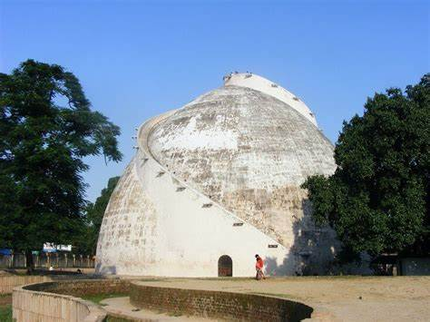
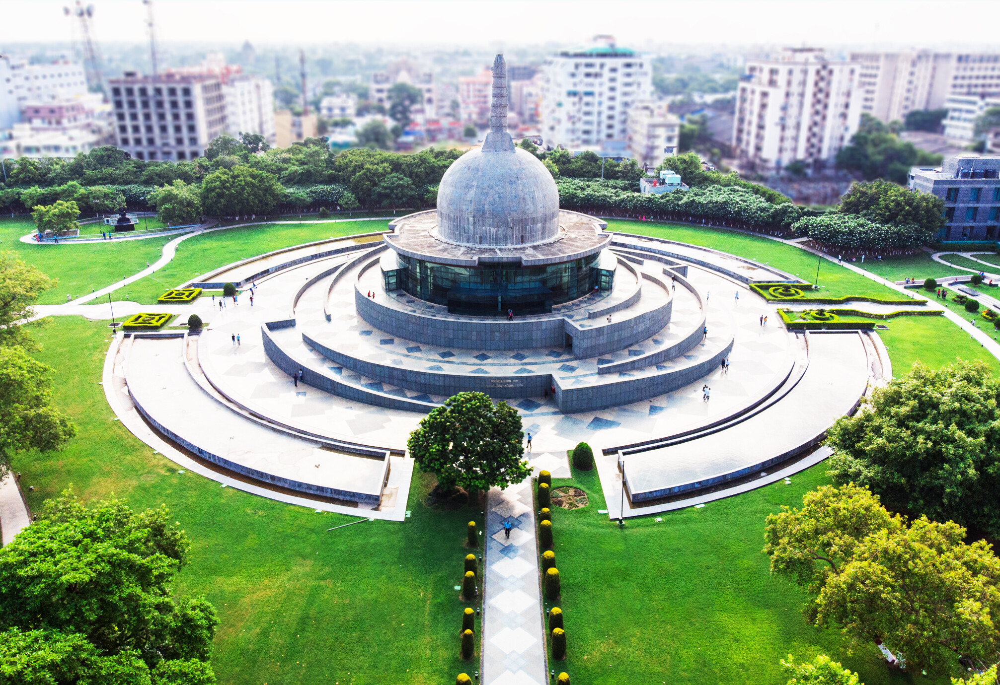

Sher Shah Suri Tomb
The Tomb of Sher Shah Suri is situated at Sasaram in Rohtas district of Bihar. Sher Shah Suri's tomb is a majestic example of ancient architecture..
Learn More

Golghar
Golghar, an enormous granary, was built by Captain John Garstin for British army in 1786, after the terrible impact of 1770 famine. .
Learn More

Buddha smriti Park
Buddha Smriti Park also known as Buddha Memorial Park is an urban park located on Frazer Road near Patna Junction in Patna, India..
Learn More